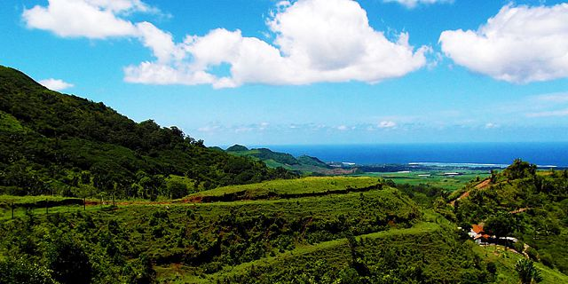
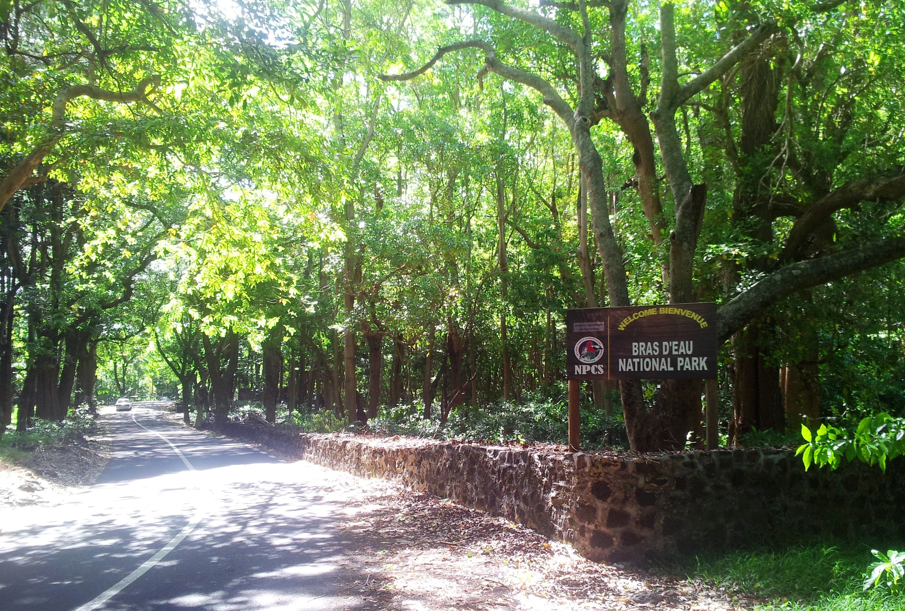
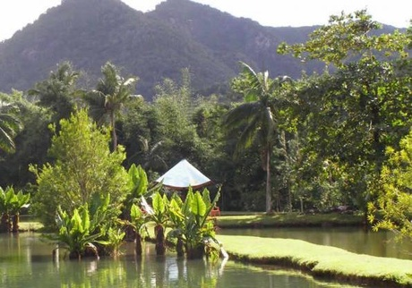
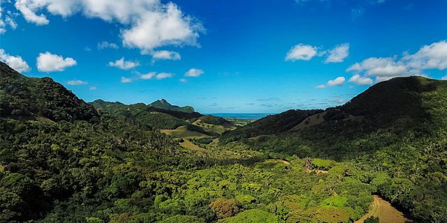
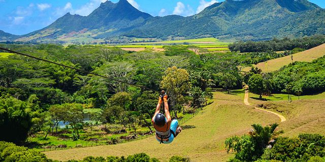

La Vallee Des Couleurs Nature Park
Location: South
Operating Hours: 10:00 - 17:00
Operating Days: All Days
Duration: 2 hrs
Activity Time: Flexible
Transportation: Offered as Supplement
Comment Mauritius Attractions offers various activities at Vallée des Couleurs such as:
Quad biking, pond fishing, step jet, zip lines and many more. Contact us for more details.
Bras D'Eau National Park
The Coq des Bois Trail (5 km Return from Bras D’eau Visitor’s Centre) is a fairly easy one.
Though only 2.5 km long, visitors may easily enjoy the different
aspects of a forest since there are dwarf trees as well as tall trees along the track.
Le Val Nature Park
This 2,800 hectare nature park derives its name from the luxurious valley, at Cluny
south east of the island in the Grand Port district.
Isolated chimneys on the property are reminders of early sugar factories.
La Vallée de Ferney
Location: South East
Operating Hours: 09:30 - 15:30
Operating Days: All Days
Duration: Flexible
Activity Time: Flexible
Transportation: Offered as Supplement
Comment A compulsory Guide is provided free of charge for a minimum of 10 persons.
Domaine De L'Etoile
The biggest natural and private reserve in Mauritius, rich in a fauna and a protected wild flora.
Le Domaine de l’Etoile extends over 1 200 hectares and is situated in the East part of the Island,
between the village of Montagne Blanche and Kewal Nagar Belle Rive.
Native forests, lush valleys, dense vegetation… upon your arrival you will be seduced by the beauty of the place !
Discover this former sugar domain with us !
Entrance fee : Rs; 250 per adult and Rs. 175 per child
This entrance fee gives you an access to the endemic garden,
the mdiation corner, the Kids Fun Village, the mini farm and non-guided hiking.